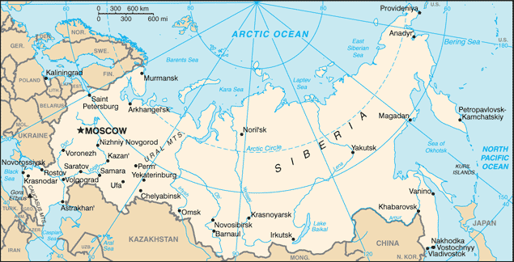
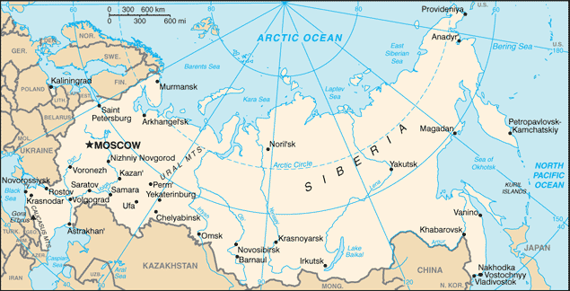

Central Asia :: RUSSIA
Introduction :: RUSSIA
-
Founded in the 12th century, the Principality of Muscovy was able to emerge from over 200 years of Mongol domination (13th-15th centuries) and to gradually conquer and absorb surrounding principalities. In the early 17th century, a new ROMANOV Dynasty continued this policy of expansion across Siberia to the Pacific. Under PETER I (ruled 1682-1725), hegemony was extended to the Baltic Sea and the country was renamed the Russian Empire. During the 19th century, more territorial acquisitions were made in Europe and Asia. Defeat in the Russo-Japanese War of 1904-05 contributed to the Revolution of 1905, which resulted in the formation of a parliament and other reforms. Repeated devastating defeats of the Russian army in World War I led to widespread rioting in the major cities of the Russian Empire and to the overthrow in 1917 of the imperial household. The communists under Vladimir LENIN seized power soon after and formed the USSR. The brutal rule of Iosif STALIN (1928-53) strengthened communist rule and Russian dominance of the Soviet Union at a cost of tens of millions of lives. After defeating Germany in World War II as part of an alliance with the US (1939-1945), the USSR expanded its territory and influence in Eastern Europe and emerged as a global power. The USSR was the principal adversary of the US during the Cold War (1947-1991). The Soviet economy and society stagnated in the decades following Stalin’s rule, until General Secretary Mikhail GORBACHEV (1985-91) introduced glasnost (openness) and perestroika (restructuring) in an attempt to modernize communism, but his initiatives inadvertently released forces that by December 1991 splintered the USSR into Russia and 14 other independent republics.Following economic and political turmoil during President Boris YELTSIN's term (1991-99), Russia shifted toward a centralized authoritarian state under the leadership of President Vladimir PUTIN (2000-2008, 2012-present) in which the regime seeks to legitimize its rule through managed elections, populist appeals, a foreign policy focused on enhancing the country's geopolitical influence, and commodity-based economic growth. Russia faces a largely subdued rebel movement in Chechnya and some other surrounding regions, although violence still occurs throughout the North Caucasus.
Geography :: RUSSIA
-
North Asia bordering the Arctic Ocean, extending from Europe (the portion west of the Urals) to the North Pacific Ocean60 00 N, 100 00 EAsiatotal: 17,098,242 sq kmland: 16,377,742 sq kmwater: 720,500 sq kmcountry comparison to the world: 1approximately 1.8 times the size of the UStotal: 22,408 kmborder countries (14): Azerbaijan 338 km, Belarus 1,312 km, China (southeast) 4,133 km, China (south) 46 km, Estonia 324 km, Finland 1,309 km, Georgia 894 km, Kazakhstan 7,644 km, North Korea 18 km, Latvia 332 km, Lithuania (Kaliningrad Oblast) 261 km, Mongolia 3,452 km, Norway 191 km, Poland (Kaliningrad Oblast) 210 km, Ukraine 1,944 km37,653 kmterritorial sea: 12 nmcontiguous zone: 24 nmexclusive economic zone: 200 nmcontinental shelf: 200-m depth or to the depth of exploitationranges from steppes in the south through humid continental in much of European Russia; subarctic in Siberia to tundra climate in the polar north; winters vary from cool along Black Sea coast to frigid in Siberia; summers vary from warm in the steppes to cool along Arctic coastbroad plain with low hills west of Urals; vast coniferous forest and tundra in Siberia; uplands and mountains along southern border regionsmean elevation: 600 melevation extremes: lowest point: Caspian Sea -28 mhighest point: Gora El'brus 5,642 m (highest point in Europe)wide natural resource base including major deposits of oil, natural gas, coal, and many strategic minerals, reserves of rare earth elements, timbernote: formidable obstacles of climate, terrain, and distance hinder exploitation of natural resourcesagricultural land: 13.1%arable land 7.3%; permanent crops 0.1%; permanent pasture 5.7%forest: 49.4%other: 37.5% (2011 est.)43,000 sq km (2012)population is heavily concentrated in the westernmost fifth of the country extending from the Baltic Sea, south to the Caspian Sea, and eastward parallel to the Kazakh border; elsewhere, sizeable pockets are isolated and generally found in the southpermafrost over much of Siberia is a major impediment to development; volcanic activity in the Kuril Islands; volcanoes and earthquakes on the Kamchatka Peninsula; spring floods and summer/autumn forest fires throughout Siberia and parts of European Russiavolcanism: significant volcanic activity on the Kamchatka Peninsula and Kuril Islands; the peninsula alone is home to some 29 historically active volcanoes, with dozens more in the Kuril Islands; Kliuchevskoi (4,835 m), which erupted in 2007 and 2010, is Kamchatka's most active volcano; Avachinsky and Koryaksky volcanoes, which pose a threat to the city of Petropavlovsk-Kamchatsky, have been deemed Decade Volcanoes by the International Association of Volcanology and Chemistry of the Earth's Interior, worthy of study due to their explosive history and close proximity to human populations; other notable historically active volcanoes include Bezymianny, Chikurachki, Ebeko, Gorely, Grozny, Karymsky, Ketoi, Kronotsky, Ksudach, Medvezhia, Mutnovsky, Sarychev Peak, Shiveluch, Tiatia, Tolbachik, and Zheltovskyair pollution from heavy industry, emissions of coal-fired electric plants, and transportation in major cities; industrial, municipal, and agricultural pollution of inland waterways and seacoasts; deforestation; soil erosion; soil contamination from improper application of agricultural chemicals; scattered areas of sometimes intense radioactive contamination; groundwater contamination from toxic waste; urban solid waste management; abandoned stocks of obsolete pesticidesparty to: Air Pollution, Air Pollution-Nitrogen Oxides, Air Pollution-Sulfur 85, Antarctic-Environmental Protocol, Antarctic-Marine Living Resources, Antarctic Seals, Antarctic Treaty, Biodiversity, Climate Change, Climate Change-Kyoto Protocol, Desertification, Endangered Species, Environmental Modification, Hazardous Wastes, Law of the Sea, Marine Dumping, Ozone Layer Protection, Ship Pollution, Tropical Timber 83, Wetlands, Whalingsigned, but not ratified: Air Pollution-Sulfur 94largest country in the world in terms of area but unfavorably located in relation to major sea lanes of the world; despite its size, much of the country lacks proper soils and climates (either too cold or too dry) for agriculture; Mount El'brus is Europe's tallest peak; Lake Baikal, the deepest lake in the world, is estimated to hold one fifth of the world's fresh water
People and Society :: RUSSIA
-
142,257,519 (July 2017 est.)country comparison to the world: 9noun: Russian(s)adjective: RussianRussian 77.7%, Tatar 3.7%, Ukrainian 1.4%, Bashkir 1.1%, Chuvash 1%, Chechen 1%, other 10.2%, unspecified 3.9%note: nearly 200 national and/or ethnic groups are represented in Russia's 2010 census (2010 est.)Russian (official) 85.7%, Tatar 3.2%, Chechen 1%, other 10.1%note: data represent native language spoken (2010 est.)Russian Orthodox 15-20%, Muslim 10-15%, other Christian 2% (2006 est.)note: estimates are of practicing worshipers; Russia has large populations of non-practicing believers and non-believers, a legacy of over seven decades of Soviet rule; Russia officially recognizes Orthodox Christianity, Islam, Judaism, and Buddhism as traditional religions0-14 years: 17.12% (male 12,509,563/female 11,843,254)15-24 years: 9.46% (male 6,881,880/female 6,572,191)25-54 years: 44.71% (male 31,220,990/female 32,375,489)55-64 years: 14.44% (male 8,849,707/female 11,693,131)65 years and over: 14.28% (male 6,352,557/female 13,958,757) (2017 est.)total dependency ratio: 43.5youth dependency ratio: 24.2elderly dependency ratio: 19.4potential support ratio: 5.2 (2015 est.)total: 39.6 yearsmale: 36.6 yearsfemale: 42.5 years (2017 est.)country comparison to the world: 53-0.08% (2017 est.)country comparison to the world: 20411 births/1,000 population (2017 est.)country comparison to the world: 17813.5 deaths/1,000 population (2017 est.)country comparison to the world: 91.7 migrant(s)/1,000 population (2017 est.)country comparison to the world: 52population is heavily concentrated in the westernmost fifth of the country extending from the Baltic Sea, south to the Caspian Sea, and eastward parallel to the Kazakh border; elsewhere, sizeable pockets are isolated and generally found in the southurban population: 74.2% of total population (2017)rate of urbanization: -0.15% annual rate of change (2015-20 est.)MOSCOW (capital) 12.166 million; Saint Petersburg 4.993 million; Novosibirsk 1.497 million; Yekaterinburg 1.379 million; Nizhniy Novgorod 1.212 million; Samara 1.164 million (2015)at birth: 1.06 male(s)/female0-14 years: 1.06 male(s)/female15-24 years: 1.05 male(s)/female25-54 years: 0.96 male(s)/female55-64 years: 0.75 male(s)/female65 years and over: 0.45 male(s)/femaletotal population: 0.86 male(s)/female (2016 est.)24.6 years (2009 est.)25 deaths/100,000 live births (2015 est.)country comparison to the world: 122total: 6.8 deaths/1,000 live birthsmale: 7.6 deaths/1,000 live birthsfemale: 5.9 deaths/1,000 live births (2017 est.)country comparison to the world: 163total population: 71 yearsmale: 65.3 yearsfemale: 77.1 years (2017 est.)country comparison to the world: 1541.61 children born/woman (2017 est.)country comparison to the world: 17968%note: percent of women aged 15-44 (2011)7.1% of GDP (2014)country comparison to the world: 803.31 physicians/1,000 population (2014)9.7 beds/1,000 population (2006)improved:urban: 98.9% of populationrural: 91.2% of populationtotal: 96.9% of populationunimproved:urban: 1.1% of populationrural: 8.8% of populationtotal: 3.1% of population (2015 est.)improved:urban: 77% of populationrural: 58.7% of populationtotal: 72.2% of populationunimproved:urban: 23% of populationrural: 41.3% of populationtotal: 27.8% of population (2015 est.)NANANAdegree of risk: intermediatefood or waterborne diseases: bacterial diarrheavectorborne disease: tickborne encephalitis (2016)23.1% (2016)country comparison to the world: 703.9% of GDP (2012)country comparison to the world: 110definition: age 15 and over can read and writetotal population: 99.7%male: 99.7%female: 99.6% (2015 est.)total: 15 yearsmale: 15 yearsfemale: 15 years (2014)total: 16%male: 15.3%female: 16.9% (2015 est.)country comparison to the world: 78
Government :: RUSSIA
-
conventional long form: Russian Federationconventional short form: Russialocal long form: Rossiyskaya Federatsiyalocal short form: Rossiyaformer: Russian Empire, Russian Soviet Federative Socialist Republicetymology: Russian lands were generally referred to as Muscovy until PETER I officially declared the Russian Empire in 1721; the new name sought to invoke the patrimony of the medieval eastern European Rus state centered on Kyiv in present-day Ukraine; the Rus were a Varangian (eastern Viking) elite that imposed their rule and eventually their name on their Slavic subjectssemi-presidential federationname: Moscowgeographic coordinates: 55 45 N, 37 36 Etime difference: UTC+3 (8 hours ahead of Washington, DC, during Standard Time)note: Russia has 11 time zones, the largest number of contiguous time zones of any country in the world; in 2014, two time zones were added and DST was dropped46 provinces (oblastey, singular - oblast), 21 republics (respublik, singular - respublika), 4 autonomous okrugs (avtonomnykh okrugov, singular - avtonomnyy okrug), 9 krays (krayev, singular - kray), 2 federal cities (goroda, singular - gorod), and 1 autonomous oblast (avtonomnaya oblast')oblasts: Amur (Blagoveshchensk), Arkhangel'sk, Astrakhan', Belgorod, Bryansk, Chelyabinsk, Irkutsk, Ivanovo, Kaliningrad, Kaluga, Kemerovo, Kirov, Kostroma, Kurgan, Kursk, Leningrad, Lipetsk, Magadan, Moscow, Murmansk, Nizhniy Novgorod, Novgorod, Novosibirsk, Omsk, Orenburg, Orel, Penza, Pskov, Rostov, Ryazan', Sakhalin (Yuzhno-Sakhalinsk), Samara, Saratov, Smolensk, Sverdlovsk (Yekaterinburg), Tambov, Tomsk, Tula, Tver', Tyumen', Ul'yanovsk, Vladimir, Volgograd, Vologda, Voronezh, Yaroslavl'republics: Adygeya (Maykop), Altay (Gorno-Altaysk), Bashkortostan (Ufa), Buryatiya (Ulan-Ude), Chechnya (Groznyy), Chuvashiya (Cheboksary), Dagestan (Makhachkala), Ingushetiya (Magas), Kabardino-Balkariya (Nal'chik), Kalmykiya (Elista), Karachayevo-Cherkesiya (Cherkessk), Kareliya (Petrozavodsk), Khakasiya (Abakan), Komi (Syktyvkar), Mariy-El (Yoshkar-Ola), Mordoviya (Saransk), North Ossetia (Vladikavkaz), Sakha [Yakutiya] (Yakutsk), Tatarstan (Kazan'), Tyva (Kyzyl), Udmurtiya (Izhevsk)autonomous okrugs: Chukotka (Anadyr'), Khanty-Mansi-Yugra (Khanty-Mansiysk), Nenets (Nar'yan-Mar), Yamalo-Nenets (Salekhard)krays: Altay (Barnaul), Kamchatka (Petropavlovsk-Kamchatskiy), Khabarovsk, Krasnodar, Krasnoyarsk, Perm', Primorskiy [Maritime] (Vladivostok), Stavropol', Zabaykal'sk [Transbaikal] (Chita)federal cities: Moscow [Moskva], Saint Petersburg [Sankt-Peterburg]autonomous oblast: Yevreyskaya [Jewish] (Birobidzhan)note 1: administrative divisions have the same names as their administrative centers (exceptions have the administrative center name following in parentheses)note 2: the United States does not recognize Russia's annexation of Ukraine's Autonomous Republic of Crimea and the municipality of Sevastopol, nor their redesignation as the Republic of Crimea and the Federal City of Sevastopol24 August 1991 (from the Soviet Union); notable earlier dates: 1157 (Principality of Vladimir-Suzdal created); 16 January 1547 (Tsardom of Muscovy established); 22 October 1721 (Russian Empire proclaimed); 30 December 1922 (Soviet Union established)Russia Day, 12 June (1990)history: several previous (during Russian Empire and Soviet era); latest drafted 12 July 1993, adopted by referendum 12 December 1993, effective 25 December 1993amendments: proposed by the president of the Russian Federation, by either house of the Federal Assembly, by the government of the Russian Federation, or by legislative (representative) bodies of the Federation's constituent entities; proposals to amend the government’s constitutional system, human and civil rights and freedoms, and procedures for amending or drafting a new constitution require formation of a Constitutional Assembly; passage of such amendments requires two-thirds majority vote of its total membership; passage in a referendum requires participation of an absolute majority of eligible voters and an absolute majority of valid votes; approval of proposed amendments to the government structure, authorities, and procedures requires approval by the legislative bodies of at least two-thirds of the Russian Federation's constituent entities; amended 2008, 2014 (2017)civil law system; judicial review of legislative actshas not submitted an ICJ jurisdiction declaration; non-party state to the ICCtcitizenship by birth: nocitizenship by descent only: at least one parent must be a citizen of Russiadual citizenship recognized: yesresidency requirement for naturalization: 3-5 years18 years of age; universalchief of state: President Vladimir Vladimirovich PUTIN (since 7 May 2012)head of government: Premier Dmitriy Anatolyevich MEDVEDEV (since 8 May 2012); First Deputy Premier Igor Ivanovich SHUVALOV (since 12 May 2008); Deputy Premiers Arkadiy Vladimirovich DVORKOVICH (since 21 May 2012), Olga Yuryevna GOLODETS (since 21 May 2012), Aleksandr Gennadiyevich KHLOPONIN (since 19 January 2010), Dmitriy Nikolayevich KOZAK (since 14 October 2008), Vitaliy Leontyevich MUTKO (since 19 October 2016), Dmitriy Olegovich ROGOZIN (since 23 December 2011), Sergey Eduardovich PRIKHODKO (since 22 May 2013); Yuriy Petrovich TRUTNEV (since 31 August 2013)cabinet: the "Government" is composed of the premier, his deputies, and ministers, all appointed by the president; the premier is also confirmed by the Dumaelections/appointments: president directly elected by absolute majority popular vote in 2 rounds if needed for a 6-year term (eligible for a second term); election last held on 4 March 2012 (next to be held in March 2018); note - term length extended to 6 years from 4 years in late 2008, effective after the 2012 election; there is no vice president; premier appointed by the president with the approval of the Dumaelection results: Vladimir PUTIN elected president; percent of vote - Vladimir PUTIN (United Russia) 63.6%, Gennadiy ZYUGANOV (CPRF) 17.2%, Mikhail PROKHOROV (CP) 8%, Vladimir ZHIRINOVSKIY (LDPR) 6.2%, Sergey MIRONOV (A Just Russia) 3.9%, other 1.1%; Dmitriy MEDVEDEV (United Russia) approved as premier by Duma; vote - 299 to 144note: there is also a Presidential Administration that provides staff and policy support to the president, drafts presidential decrees, and coordinates policy among government agencies; a Security Council also reports directly to the presidentdescription: bicameral Federal Assembly or Federalnoye Sobraniye consists of the Federation Council or Sovet Federatsii (166 seats; 2 members in each of the 83 federal administrative units (see note below) - oblasts, krays, republics, autonomous okrugs and oblasts, and the federal cities of Moscow and Saint Petersburg - appointed by the top executive and legislative officials; members serve 4-year terms) and the State Duma or Gosudarstvennaya Duma (450 seats; as of February 2014, the electoral system reverted to a mixed electoral system for the 2016 election, in which one-half of the members are directly elected by simple majority vote and one-half directly elected by proportional representation vote; members serve 5-year terms)elections: State Duma - last held on 18 September 2016 (next to be held in fall 2021)election results: State Duma - United Russia 54.2%, CPRF 13.3%, LDPR 13.1%, A Just Russia 6.2%, Rodina 1.5%, CP 0.2%; seats by party - United Russia 343, CPRF 42, LDPR 39, A Just Russia 23, Rodina 1, CP 1, independent 1note: the State Duma now includes 3 representatives and the Federation Council 2 each from the Republic of Crimea and the Federal City of Sevastopol, two regions that Russia occupied and attempted to annex from Ukraine and that the US does not recognize as part of Russiahighest court(s): Supreme Court of the Russian Federation (consists of 170 members organized into the Judicial Panel for Civil Affairs, the Judicial Panel for Criminal Affairs, and the Military Panel); Constitutional Court (consists of 19 members); note - in February 2014, Russia’s Superior Court of Arbitration was abolished and its former authorities transferred to the Supreme Court, which in addition to being the country’s highest judicial authority for appeals, civil, criminal, administrative, and military cases, and the disciplinary judicial board now has jurisdiction over economic disputesjudge selection and term of office: all members of Russia's 3 highest courts nominated by the president and appointed by the Federation Council (the upper house of the legislature); members of all 3 courts appointed for lifesubordinate courts: Higher Arbitration Court; regional (kray) and provincial (oblast) courts; Moscow and St. Petersburg city courts; autonomous province and district courts; note - the 14 Russian Republics have court systems specified by their own constitutionsA Just Russia [Sergey MIRONOV]Civic Platform or CP [Rifat SHAYKHUTDINOV]Communist Party of the Russian Federation or CPRF [Gennadiy ZYUGANOV]Liberal Democratic Party of Russia or LDPR [Vladimir ZHIRINOVSKIY]Rodina [Aleksei ZHURAVLYOV]United Russia [Dmitriy MEDVEDEV]note: 72 political parties are registered with Russia's Ministry of Justice (as of August 2017), but only six parties maintain representation in Russia's national legislature, and two of these only have one deputy apieceCommittees of Soldiers' MothersConfederation of Labor of Russia or KTRFederation of Independent Trade Unions of RussiaGolos Association in Defense of Voters' RightsMemorialMovement Against Illegal MigrationRusskiyeSolidarnostThe World Russian People's CongressUnion of Russian Writersother: business associations; environmental organizations; religious groups (especially those with Orthodox or Muslim affiliation); veterans groupsAPEC, Arctic Council, ARF, ASEAN (dialogue partner), BIS, BRICS, BSEC, CBSS, CD, CE, CERN (observer), CICA, CIS, CSTO, EAEC, EAEU, EAPC, EAS, EBRD, FAO, FATF, G-20, GCTU, IAEA, IBRD, ICAO, ICC (national committees), ICRM, IDA, IFAD, IFC, IFRCS, IHO, ILO, IMF, IMO, IMSO, Interpol, IOC, IOM (observer), IPU, ISO, ITSO, ITU, ITUC (NGOs), LAIA (observer), MIGA, MINURSO, MONUSCO, NEA, NSG, OAS (observer), OIC (observer), OPCW, OSCE, Paris Club, PCA, PFP, SCO, UN, UNCTAD, UNESCO, UNHCR, UNIDO, UNISFA, UNMIL, UNMISS, UNOCI, UNSC (permanent), UNTSO, UNWTO, UPU, WCO, WFTU (NGOs), WHO, WIPO, WMO, WTO, ZCchief of mission: Ambassador Anatoliy Ivanovich ANTONOV (since 8 September 2017)chancery: 2650 Wisconsin Avenue NW, Washington, DC 20007telephone: [1] (202) 298-5700, 5701, 5704, 5708FAX: [1] (202) 298-5735consulate(s) general: Houston, New York, San Francisco, Seattlechief of mission: Ambassador Jon HUNTSMAN (since 3 October 2017)embassy: Bolshoy Deviatinskiy Pereulok No. 8, 121099 Moscowmailing address: PSC-77, APO AE 09721telephone: [7] (495) 728-5000FAX: [7] (495) 728-5090consulate(s) general: Saint Petersburg, Vladivostok, Yekaterinburgthree equal horizontal bands of white (top), blue, and rednote: the colors may have been based on those of the Dutch flag; despite many popular interpretations, there is no official meaning assigned to the colors of the Russian flag; this flag inspired several other Slav countries to adopt horizontal tricolors of the same colors but in different arrangements, and so red, blue, and white became the Pan-Slav colorsbear, double-headed eagle; national colors: white, blue, redname: "Gimn Rossiyskoy Federatsii" (National Anthem of the Russian Federation)lyrics/music: Sergey Vladimirovich MIKHALKOV/Aleksandr Vasilyevich ALEKSANDROVnote: in 2000, Russia adopted the tune of the anthem of the former Soviet Union (composed in 1939); the lyrics, also adopted in 2000, were written by the same person who authored the Soviet lyrics in 1943
Economy :: RUSSIA
-
Russia has undergone significant changes since the collapse of the Soviet Union, moving from a centrally planned economy towards a more market-based system. Both economic growth and reform have stalled in recent years, however, and Russia remains a predominantly statist economy with a high concentration of wealth in officials' hands. Economic reforms in the 1990s privatized most industry, with notable exceptions in the energy, transportation, banking, and defense-related sectors. The protection of property rights is still weak, and the state continues to interfere in the free operation of the private sector.Russia is one of the world's leading producers of oil and natural gas, and is also a top exporter of metals such as steel and primary aluminum. Russia's reliance on commodity exports makes it vulnerable to boom and bust cycles that follow the volatile swings in global prices. The economy, which had averaged 7% growth during the 1998-2008 period as oil prices rose rapidly, has seen diminishing growth rates since then due to the exhaustion of Russia’s commodity-based growth model.A combination of falling oil prices, international sanctions, and structural limitations pushed Russia into a deep recession in 2015, with the GDP falling by close to 4%. The downturn continued through 2016, with GDP contracting by 0.6%. Government support for import substitution has increased recently in an effort to diversify the economy away from extractive industries. Russia is heavily dependent on the movement of world commodity prices and the Central Bank of Russia estimates that if oil prices remain below $40 per barrel in 2017, the resulting shock would cause GDP to fall by up to 5%.$3.862 trillion (2016 est.)$3.822 trillion (2015 est.)$3.891 trillion (2014 est.)note: data are in 2016 dollarscountry comparison to the world: 7$1.283 trillion (2016 est.)-0.2% (2016 est.)-2.8% (2015 est.)0.7% (2014 est.)country comparison to the world: 194$26,900 (2016 est.)$27,000 (2015 est.)$27,800 (2014 est.)note: data are in 2016 dollarscountry comparison to the world: 7227.3% of GDP (2016 est.)27.2% of GDP (2015 est.)25% of GDP (2014 est.)country comparison to the world: 51household consumption: 51.5%government consumption: 18.1%investment in fixed capital: 21%investment in inventories: 4%exports of goods and services: 26%imports of goods and services: -20.6% (2016 est.)agriculture: 4.7%industry: 32.5%services: 62.1% (2016 est.)grain, sugar beets, sunflower seeds, vegetables, fruits; beef, milkcomplete range of mining and extractive industries producing coal, oil, gas, chemicals, and metals; all forms of machine building from rolling mills to high-performance aircraft and space vehicles; defense industries (including radar, missile production, advanced electronic components), shipbuilding; road and rail transportation equipment; communications equipment; agricultural machinery, tractors, and construction equipment; electric power generating and transmitting equipment; medical and scientific instruments; consumer durables, textiles, foodstuffs, handicrafts-0.1% (2016 est.)country comparison to the world: 15976.64 million (2016 est.)country comparison to the world: 7agriculture: 9.4%industry: 27.6%services: 63% (2016 est.)5.5% (2016 est.)5.6% (2015 est.)country comparison to the world: 7113.3% (2015 est.)lowest 10%: 2.3%highest 10%: 32.2% (2012 est.)41.2 (2015)41.9 (2013)country comparison to the world: 54revenues: $200.7 billionexpenditures: $244.8 billion (2016 est.)15.7% of GDP (2016 est.)country comparison to the world: 181-3.4% of GDP (2016 est.)country comparison to the world: 13010% of GDP (2016 est.)9.1% of GDP (2015 est.)note: data cover general government debt, and includes debt instruments issued (or owned) by government entities other than the treasury; the data include treasury debt held by foreign entities; the data include debt issued by subnational entities, as well as intra-governmental debt; intra-governmental debt consists of treasury borrowings from surpluses in the social funds, such as for retirement, medical care, and unemployment, debt instruments for the social funds are not sold at public auctionscountry comparison to the world: 195calendar year7% (2016 est.)15.5% (2015 est.)country comparison to the world: 18810% (31 December 2016 est.)11% (03 August 2015)note: this is the so-called refinancing rate, but in Russia banks do not get refinancing at this rate; this is a reference rate used primarily for fiscal purposescountry comparison to the world: 2112.59% (31 December 2016 est.)15.73% (31 December 2015 est.)country comparison to the world: 63$195.9 billion (31 December 2016 est.)$151.5 billion (31 December 2015 est.)country comparison to the world: 23$633.4 billion (31 December 2016 est.)$482.7 billion (31 December 2015 est.)country comparison to the world: 19$770.1 billion (31 December 2016 est.)$603.9 billion (31 December 2015 est.)country comparison to the world: 18$635.9 billion (31 December 2016 est.)$393.2 billion (31 December 2015 est.)$385.9 billion (31 December 2014 est.)country comparison to the world: 19$25.54 billion (2016 est.)$68.83 billion (2015 est.)country comparison to the world: 12$281.9 billion (2016 est.)$341.4 billion (2015 est.)country comparison to the world: 18petroleum and petroleum products, natural gas, metals, wood and wood products, chemicals, and a wide variety of civilian and military manufacturesNetherlands 10.5%, China 10.3%, Germany 7.8%, Turkey 5%, Italy 4.4%, Belarus 4.3% (2016)$191.6 billion (2016 est.)$193 billion (2015 est.)country comparison to the world: 23machinery, vehicles, pharmaceutical products, plastic, semi-finished metal products, meat, fruits and nuts, optical and medical instruments, iron, steelChina 21.6%, Germany 11%, US 6.3%, France 4.8%, Italy 4.4%, Belarus 4.3% (2016)$377.7 billion (31 December 2016 est.)$368.4 billion (31 December 2015 est.)country comparison to the world: 8$434.8 billion (31 December 2016 est.)$467.7 billion (31 December 2015 est.)country comparison to the world: 29$461.7 billion (31 December 2016 est.)$347.7 billion (31 December 2015 est.)country comparison to the world: 19$418 billion (31 December 2016 est.)$367.6 billion (31 December 2015 est.)country comparison to the world: 19Russian rubles (RUB) per US dollar -67.056 (2016 est.)67.056 (2015 est.)60.938 (2014 est.)38.378 (2013 est.)30.84 (2012 est.)
Energy :: RUSSIA
-
electrification - total population: 100% (2016)1.008 trillion kWh (2015 est.)country comparison to the world: 5890.1 billion kWh (2015 est.)country comparison to the world: 613.13 billion kWh (2016 est.)country comparison to the world: 163.194 billion kWh (2016 est.)country comparison to the world: 50263.5 million kW (2015 est.)country comparison to the world: 670.2% of total installed capacity (2015 est.)country comparison to the world: 1049.7% of total installed capacity (2015 est.)country comparison to the world: 1619% of total installed capacity (2015 est.)country comparison to the world: 920.6% of total installed capacity (2015 est.)country comparison to the world: 14710.55 million bbl/day (2016 est.)country comparison to the world: 15.116 million bbl/day (2016 est.)country comparison to the world: 215,110 bbl/day (2016 est.)country comparison to the world: 6880 billion bbl (1 January 2017 es)country comparison to the world: 86.174 million bbl/day (2014 est.)country comparison to the world: 43.594 million bbl/day (2015 est.)country comparison to the world: 63.133 million bbl/day (2014 est.)country comparison to the world: 247,770 bbl/day (2016 est.)country comparison to the world: 84598.6 billion cu m (2015 est.)country comparison to the world: 2418.9 billion cu m (2015 est.)country comparison to the world: 3197.7 billion cu m (2015 est.)country comparison to the world: 118 billion cu m (2015 est.)country comparison to the world: 2047.8 trillion cu m (1 January 2017 es)country comparison to the world: 11.756 billion Mt (2014 est.)country comparison to the world: 5
Communications :: RUSSIA
-
total subscriptions: 32,276,615subscriptions per 100 inhabitants: 23 (July 2016 est.)country comparison to the world: 7total: 231,393,994subscriptions per 100 inhabitants: 163 (July 2016 est.)country comparison to the world: 7general assessment: telecom sector impacted by sanctions related to the annexations in Ukraine; mobile market dominaed by four major operators; the estimated number of mobile subscribers jumped from fewer than 1 million in 1998 to 255 million in 2016; fixed-line service has improved but a large demand remainsdomestic: cross-country digital trunk lines run from Saint Petersburg to Khabarovsk, and from Moscow to Novorossiysk; the telephone systems in 60 regional capitals have modern digital infrastructures; cellular services, both analog and digital, are available in many areas; in rural areas, telephone services are still outdated, inadequate, and low-densityinternational: country code - 7; connected internationally by undersea fiber -optic cables; satellite earth stations provide access to Intelsat, Intersputnik, Eutelsat, Inmarsat, and Orbita systems (2016)13 national TV stations with the federal government owning 1 and holding a controlling interest in a second; state-owned Gazprom maintains a controlling interest in 2 of the national channels; government-affiliated Bank Rossiya owns controlling interest in a fourth and fifth, while a sixth national channel is owned by the Moscow city administration; the Russian Orthodox Church and the Russian military, respectively, own 2 additional national channels; roughly 3,300 national, regional, and local TV stations with over two-thirds completely or partially controlled by the federal or local governments; satellite TV services are available; 2 state-run national radio networks with a third majority-owned by Gazprom; roughly 2,400 public and commercial radio stations (2016).ru; note - Russia also has responsibility for a legacy domain ".su" that was allocated to the Soviet Union and is being phased outtotal: 108,772,470percent of population: 76.4% (July 2016 est.)country comparison to the world: 7
Transportation :: RUSSIA
-
number of registered air carriers: 32inventory of registered aircraft operated by air carriers: 661annual passenger traffic on registered air carriers: 76,846,126annual freight traffic on registered air carriers: 4,761,047,070 mt-km (2015)RA (2016)1,218 (2013)country comparison to the world: 5total: 594over 3,047 m: 542,438 to 3,047 m: 1971,524 to 2,437 m: 123914 to 1,523 m: 95under 914 m: 125 (2017)total: 624over 3,047 m: 42,438 to 3,047 m: 131,524 to 2,437 m: 69914 to 1,523 m: 81under 914 m: 457 (2013)49 (2013)gas 177,700 km; oil 54,800 km; refined products 19,300 km (2016)total: 87,157 kmbroad gauge: 86,200 km 1.520-m gauge (40,300 km electrified)narrow gauge: 957 km 1.067-m gauge (on Sakhalin Island)note: an additional 30,000 km of non-common carrier lines serve industries (2014)country comparison to the world: 3total: 1,283,387 kmpaved: 927,721 km (includes 39,143 km of expressways)unpaved: 355,666 km (2012)country comparison to the world: 5102,000 km (including 48,000 km with guaranteed depth; the 72,000-km system in European Russia links Baltic Sea, White Sea, Caspian Sea, Sea of Azov, and Black Sea) (2009)country comparison to the world: 2total: 1,143by type: bulk carrier 20, cargo 642, carrier 3, chemical tanker 57, combination ore/oil 42, container 13, passenger 15, passenger/cargo 7, petroleum tanker 244, refrigerated cargo 84, roll on/roll off 13, specialized tanker 3foreign-owned: 155 (Belgium 4, Cyprus 13, Estonia 1, Ireland 1, Italy 14, Latvia 2, Netherlands 2, Romania 1, South Korea 1, Switzerland 3, Turkey 101, Ukraine 12)registered in other countries: 439 (Antigua and Barbuda 3, Belgium 1, Belize 30, Bulgaria 2, Cambodia 50, Comoros 12, Cook Islands 1, Cyprus 46, Dominica 3, Georgia 6, Hong Kong 1, Kiribati 1, Liberia 109, Malaysia 2, Malta 45, Marshall Islands 5, Moldova 5, Mongolia 2, Panama 49, Romania 1, Saint Kitts and Nevis 13, Saint Vincent and the Grenadines 11, Sierra Leone 7, Singapore 2, Spain 6, Vanuatu 7, unknown 19) (2010)country comparison to the world: 11major seaport(s): Kaliningrad, Nakhodka, Novorossiysk, Primorsk, Vostochnyyriver port(s): Saint Petersburg (Neva River)oil terminal(s): Kavkaz oil terminalcontainer port(s) (TEUs): Saint Petersburg (2,365,174)LNG terminal(s) (export): Sakhalin Island
Military and Security :: RUSSIA
-
5.4% of GDP (2016)4.86% of GDP (2015)4.1% of GDP (2014)3.96% of GDP (2013)3.75% of GDP (2012)country comparison to the world: 16Ground Troops (Sukhoputnyye Voyskia, SV), Navy (Voyenno-Morskoy Flot, VMF), Air Forces (Voyenno-Vozdushniye Sily, VVS); Airborne Troops (Vozdushno-Desantnyye Voyska, VDV), Missile Troops of Strategic Purpose (Raketnyye Voyska Strategicheskogo Naznacheniya, RVSN) referred to commonly as Strategic Rocket Forces, and Aerospace Defense Troops (Voyska Vozdushno-Kosmicheskoy Oborony or Voyska VKO) are independent "combat arms," not subordinate to any of the three branches; Russian Ground Troops include the following combat arms: motorized-rifle troops, tank troops, missile and artillery troops, air defense of the Ground Troops (2014)18-27 years of age for compulsory or voluntary military service; males are registered for the draft at 17 years of age; 1-year service obligation (conscripts can only be sent to combat zones after 6 months of training); reserve obligation for non-officers to age 50; enrollment in military schools from the age of 16, cadets classified as members of the armed forcesnote: the chief of the General Staff Mobilization Directorate announced in March 2015 that for health reasons, only 76% of draftees called up during the spring 2015 draft campaign were fit for military service (2015)
Transnational Issues :: RUSSIA
-
Russia remains concerned about the smuggling of poppy derivatives from Afghanistan through Central Asian countries; China and Russia have demarcated the once disputed islands at the Amur and Ussuri confluence and in the Argun River in accordance with the 2004 Agreement, ending their centuries-long border disputes; the sovereignty dispute over the islands of Etorofu, Kunashiri, Shikotan, and the Habomai group, known in Japan as the "Northern Territories" and in Russia as the "Southern Kurils," occupied by the Soviet Union in 1945, now administered by Russia, and claimed by Japan, remains the primary sticking point to signing a peace treaty formally ending World War II hostilities; Russia's military support and subsequent recognition of Abkhazia and South Ossetia independence in 2008 continue to sour relations with Georgia; Azerbaijan, Kazakhstan, and Russia ratified Caspian seabed delimitation treaties based on equidistance, while Iran continues to insist on a one-fifth slice of the sea; Norway and Russia signed a comprehensive maritime boundary agreement in 2010; various groups in Finland advocate restoration of Karelia (Kareliya) and other areas ceded to the Soviet Union following World War II but the Finnish Government asserts no territorial demands; Russia and Estonia signed a technical border agreement in May 2005, but Russia recalled its signature in June 2005 after the Estonian parliament added to its domestic ratification act a historical preamble referencing the Soviet occupation and Estonia's pre-war borders under the 1920 Treaty of Tartu; Russia contends that the preamble allows Estonia to make territorial claims on Russia in the future, while Estonian officials deny that the preamble has any legal impact on the treaty text; Russia demands better treatment of the Russian-speaking population in Estonia and Latvia; Russia remains involved in the conflict in eastern Ukraine while also occupying Ukraine’s territory of CrimeaLithuania and Russia committed to demarcating their boundary in 2006 in accordance with the land and maritime treaty ratified by Russia in May 2003 and by Lithuania in 1999; Lithuania operates a simplified transit regime for Russian nationals traveling from the Kaliningrad coastal exclave into Russia, while still conforming, as an EU member state with an EU external border, where strict Schengen border rules apply; preparations for the demarcation delimitation of land boundary with Ukraine have commenced; the dispute over the boundary between Russia and Ukraine through the Kerch Strait and Sea of Azov is suspended due to the occupation of Crimea by Russia; Kazakhstan and Russia boundary delimitation was ratified on November 2005 and field demarcation should commence in 2007; Russian Duma has not yet ratified 1990 Bering Sea Maritime Boundary Agreement with the US; Denmark (Greenland) and Norway have made submissions to the Commission on the Limits of the Continental Shelf (CLCS) and Russia is collecting additional data to augment its 2001 CLCS submissionrefugees (country of origin): 427,240 (Ukraine) (2017)IDPs: 19,000 (armed conflict, human rights violations, generalized violence in North Caucasus, particularly Chechnya and North Ossetia) (2016)stateless persons: 90,771 (2016); note - Russia's stateless population consists of Roma, Meskhetian Turks, and ex-Soviet citizens from the former republics; between 2003 and 2010 more than 600,000 stateless people were naturalized; most Meskhetian Turks, followers of Islam with origins in Georgia, fled or were evacuated from Uzbekistan after a 1989 pogrom and have lived in Russia for more than the required five-year residency period; they continue to be denied registration for citizenship and basic rights by local Krasnodar Krai authorities on the grounds that they are temporary illegal migrantscurrent situation: Russia is a source, transit, and destination country for men, women, and children who are subjected to forced labor and sex trafficking; with millions of foreign workers, forced labor is Russia’s predominant human trafficking problem and sometimes involves organized crime syndicates; workers from Russia, other European countries, Central Asia, and East and Southeast Asia, including North Korea and Vietnam, are subjected to forced labor in the construction, manufacturing, agricultural, textile, grocery store, maritime, and domestic service industries, as well as in forced begging, waste sorting, and street sweeping; women and children from Europe, Southeast Asia, Africa, and Central Asia are subject to sex trafficking in Russia; Russian women and children are victims of sex trafficking domestically and in Northeast Asia, Europe, Central Asia, Africa, the US, and the Middle Easttier rating: Tier 3 - Russia does not fully comply with the minimum standards for the elimination of trafficking and is not making a significant effort to do so; prosecutions of trafficking offenders remained low in comparison to the scope of Russia’s trafficking problem; the government did not develop or employ a formal system for identifying trafficking victims or referring them to protective services, although authorities reportedly assisted a limited number of victims on an ad hoc basis; foreign victims, the largest group in Russia, were not entitled to state-provided rehabilitative services and were routinely detained and deported; the government has not reported investigating reports of slave-like conditions among North Korean workers in Russia; authorities have made no effort to reduce the demand for forced labor or to develop public awareness of forced labor or sex trafficking (2015)limited cultivation of illicit cannabis and opium poppy and producer of methamphetamine, mostly for domestic consumption; government has active illicit crop eradication program; used as transshipment point for Asian opiates, cannabis, and Latin American cocaine bound for growing domestic markets, to a lesser extent Western and Central Europe, and occasionally to the US; major source of heroin precursor chemicals; corruption and organized crime are key concerns; major consumer of opiates